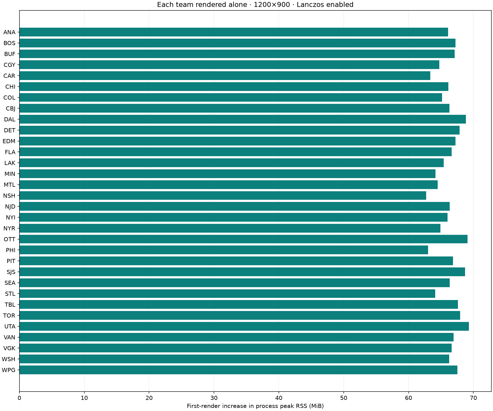
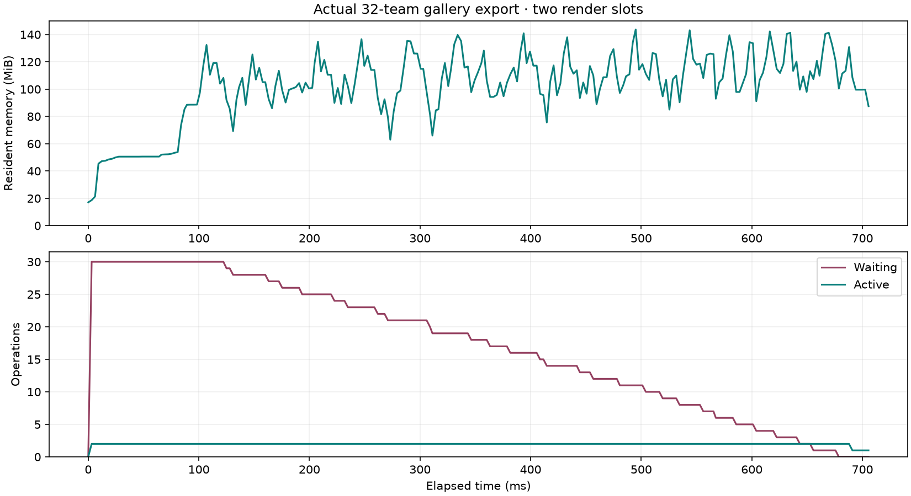

Asset variant: dark
Memory for each of the 32 teams
Return to logo gallery · CSV · Raw measurements
All logos are 1200×900 pixels with Lanczos enabled. Every decoded bitmap is approximately 4.12 MiB; temporary processing and encoded PNG sizes vary.
| Team | Bitmap MiB | Source KiB | Cached PNG KiB | Peak increase MiB | RSS increase MiB | Total peak MiB |
|---|---|---|---|---|---|---|
| Anaheim Ducks | 4.12 | 16.3 | 201.9 | 66.09 | 38.45 | 82.52 |
| Boston Bruins | 4.12 | 2.3 | 96.0 | 67.23 | 38.42 | 83.69 |
| Buffalo Sabres | 4.12 | 9.0 | 187.5 | 67.09 | 38.25 | 83.52 |
| Calgary Flames | 4.12 | 6.0 | 156.5 | 64.77 | 38.12 | 81.30 |
| Carolina Hurricanes | 4.12 | 2.8 | 165.8 | 63.34 | 33.92 | 79.83 |
| Chicago Blackhawks | 4.12 | 25.3 | 328.1 | 66.12 | 34.70 | 82.61 |
| Colorado Avalanche | 4.12 | 5.9 | 243.8 | 65.17 | 38.38 | 81.55 |
| Columbus Blue Jackets | 4.12 | 5.8 | 246.8 | 66.33 | 38.39 | 82.75 |
| Dallas Stars | 4.12 | 5.4 | 149.2 | 68.83 | 14.33 | 85.27 |
| Detroit Red Wings | 4.12 | 15.3 | 273.5 | 67.89 | 14.59 | 84.33 |
| Edmonton Oilers | 4.12 | 4.4 | 157.9 | 67.25 | 38.31 | 83.64 |
| Florida Panthers | 4.12 | 13.1 | 196.6 | 66.66 | 38.30 | 83.12 |
| Los Angeles Kings | 4.12 | 34.4 | 201.5 | 65.41 | 38.80 | 81.94 |
| Minnesota Wild | 4.12 | 4.1 | 152.3 | 64.17 | 38.22 | 80.58 |
| Montréal Canadiens | 4.12 | 2.4 | 170.6 | 64.52 | 38.16 | 80.91 |
| Nashville Predators | 4.12 | 7.6 | 193.8 | 62.72 | 38.25 | 79.12 |
| New Jersey Devils | 4.12 | 3.6 | 149.0 | 66.34 | 34.05 | 82.77 |
| New York Islanders | 4.12 | 9.7 | 185.1 | 66.00 | 16.31 | 82.39 |
| New York Rangers | 4.12 | 5.0 | 155.5 | 64.94 | 33.83 | 81.41 |
| Ottawa Senators | 4.12 | 23.4 | 264.7 | 69.08 | 41.00 | 85.72 |
| Philadelphia Flyers | 4.12 | 1.8 | 84.0 | 63.03 | 37.94 | 79.44 |
| Pittsburgh Penguins | 4.12 | 9.3 | 171.2 | 66.84 | 38.58 | 83.23 |
| San Jose Sharks | 4.12 | 9.4 | 181.7 | 68.72 | 40.41 | 85.20 |
| Seattle Kraken | 4.12 | 4.4 | 153.6 | 66.34 | 33.95 | 82.81 |
| St. Louis Blues | 4.12 | 2.6 | 129.0 | 64.11 | 33.94 | 80.52 |
| Tampa Bay Lightning | 4.12 | 1.3 | 86.1 | 67.64 | 39.42 | 84.08 |
| Toronto Maple Leafs | 4.12 | 19.6 | 154.8 | 67.95 | 34.62 | 84.45 |
| Utah Mammoth | 4.12 | 4.5 | 204.4 | 69.30 | 37.48 | 85.80 |
| Vancouver Canucks | 4.12 | 6.8 | 239.9 | 66.95 | 38.44 | 83.39 |
| Vegas Golden Knights | 4.12 | 2.1 | 121.7 | 66.66 | 37.94 | 83.09 |
| Washington Capitals | 4.12 | 7.6 | 205.5 | 66.25 | 38.56 | 82.66 |
| Winnipeg Jets | 4.12 | 3.6 | 178.1 | 67.55 | 34.22 | 84.02 |
First-render peak increases

How to read these values
Each team runs in its own fresh release-test process. Source data is prefetched into a memory-only cache before the baseline; there is no image/Core Image warmup. One 1200×900 render uses Lanczos and retains its CGImage until the memory readings are taken. Bitmap size is CGImage bytesPerRow × height. Encoded source and PNG storage are cache-owned bytes. Peak increase is the change in getrusage high-water RSS; RSS increase is the change in current resident size. Both include native temporaries, framework/driver initialization, and allocator effects. They are not precise allocation attribution or retained-heap measurements. One isolated trial per team; small differences may be noise. Because framework resources are shared in a real app, summing these peak increases would overestimate a concurrent workload.
Whole gallery batch
The separate 32-team gallery batch finished in 708.2 ms. Peak process RSS was 145.8 MiB; end RSS 66.9 MiB; RSS after clearing encoded cache and waiting 250 ms 39.1 MiB. Encoded cache storage was 5.92 MiB. Maximum observed queue depth: 30 waiting, 2 active. This is a different workload from the isolated measurements: all sources are prefetched, render results are exported to PNG files and released, and process memory is sampled about every 2 ms. Brief peaks may fall between samples; the stated peak uses getrusage.

Scripts/profile-all-team-memory.sh